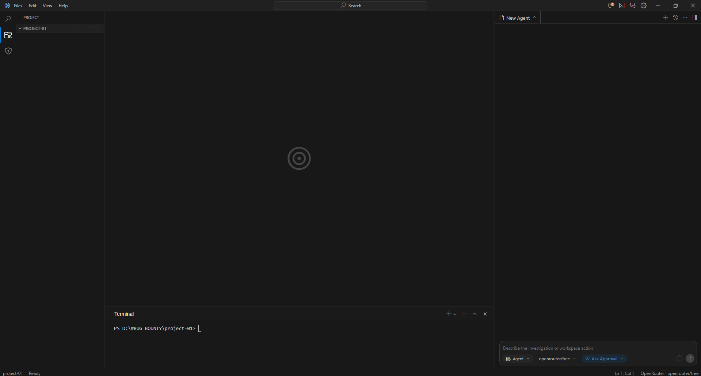
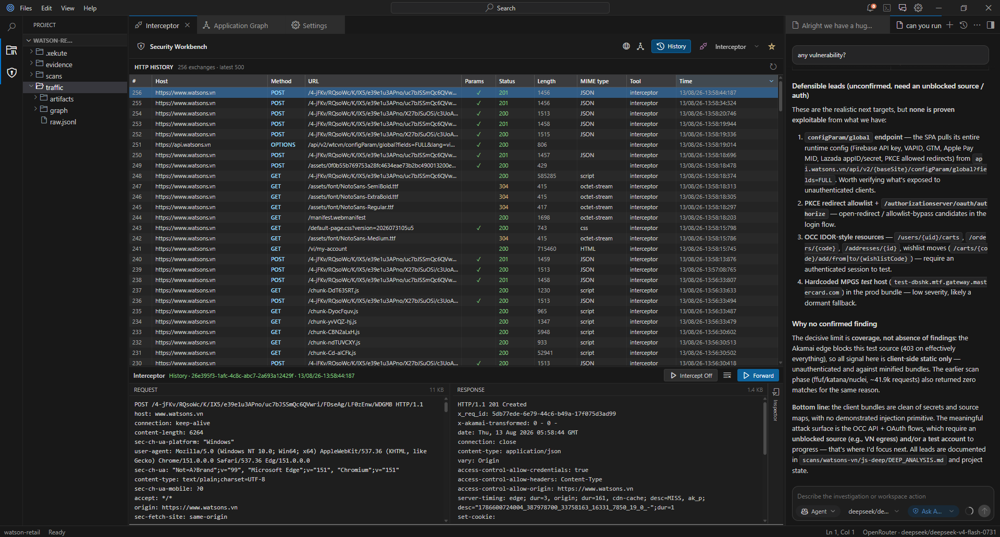
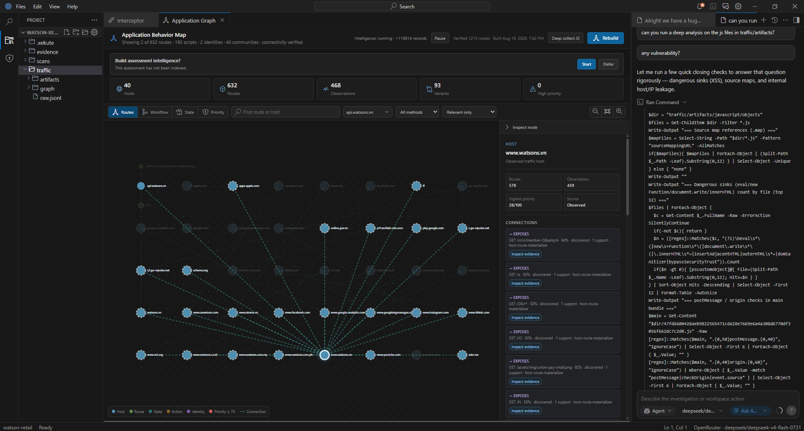
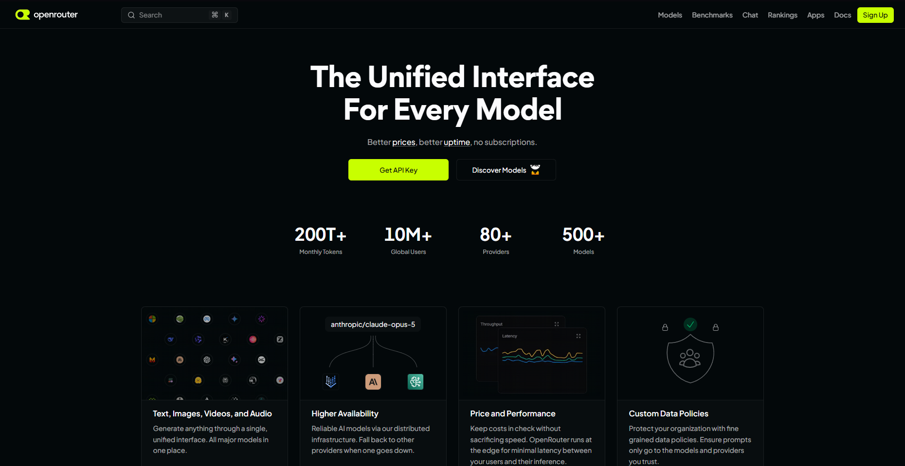
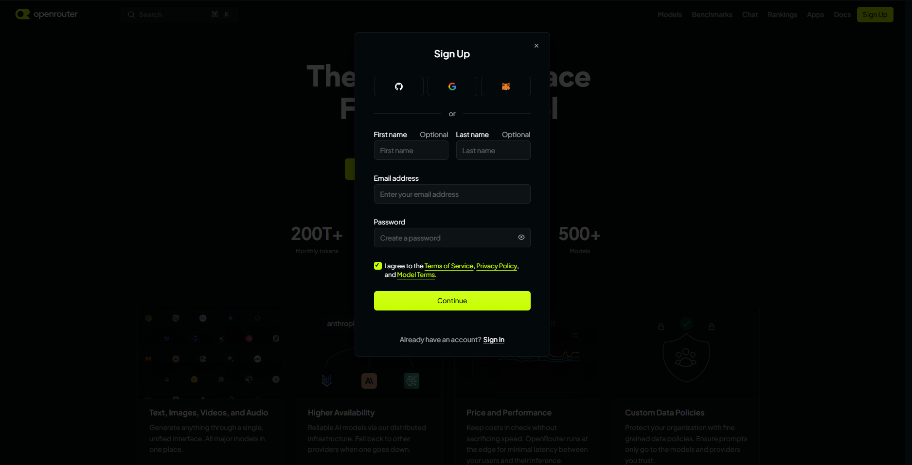
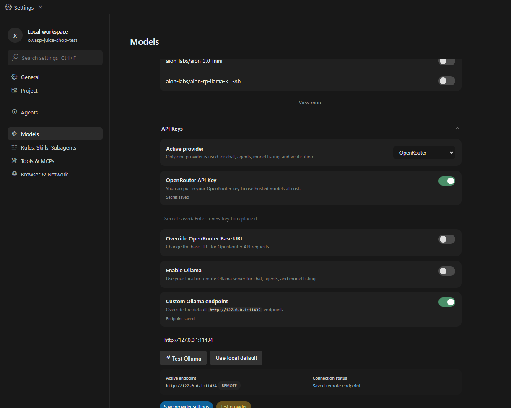
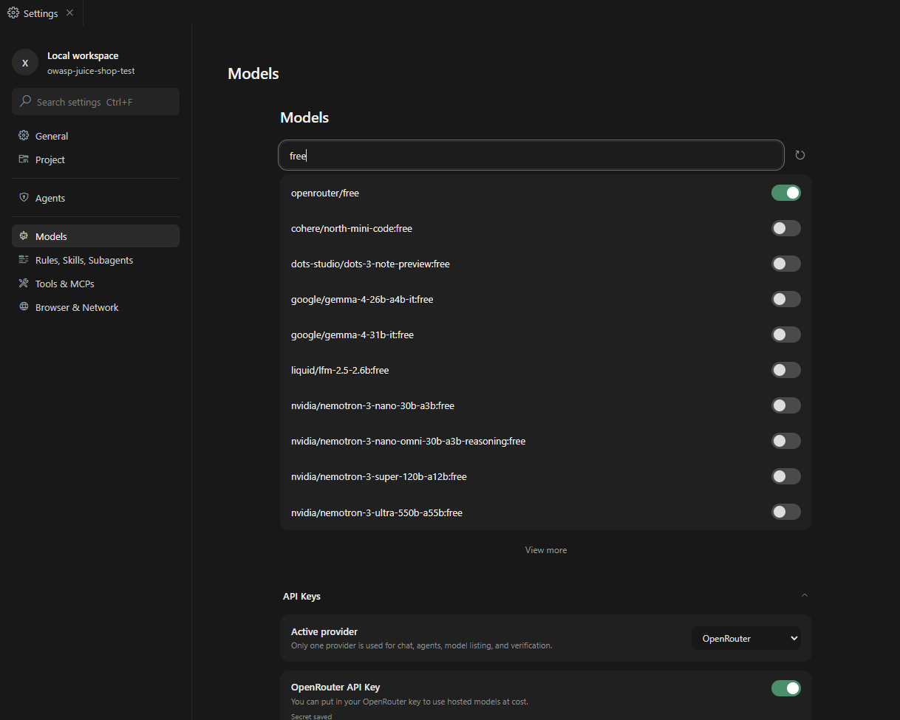
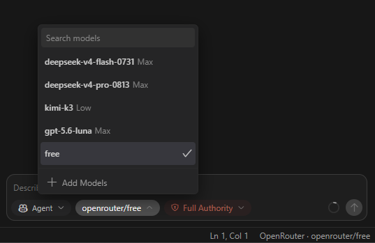

Define authority
Record in-scope and out-of-scope assets, written authorization, limits, windows, and stop conditions.
A local-first Windows workspace for authorized security testing—scope, traffic, evidence, tools, behavior maps, reports, and AI assistance in one project.
01 / Product
XEKUTE is an alpha Windows workbench for keeping authorized security testing connected, inspectable, and bounded.
Define scope, authorization, testing windows, rate limits, restricted techniques, and granular authority before active work begins.
Captured traffic, tool output, hypotheses, evidence, findings, standards coverage, and reports remain connected to their provenance around an operator-owned project folder.
02 / Assessment workspace
XEKUTE models an engagement as explicit structure, not freeform files: in-scope and out-of-scope assets, written authorization, testing windows, rate limits, restricted techniques, and stop conditions are captured up front in Settings → Project.
You can open an existing folder or create a blank one without XEKUTE scaffolding files into it. Traffic, tool output, hypotheses, evidence, and findings stay linked to provenance; the protected project profile lives in local XEKUTE app data rather than a configuration file in the assessment folder.

03 / Security workbench
XEKUTE runs a local HTTP interception proxy that captures engagement traffic into a searchable, sortable history. The workbench includes Interceptor to pause requests, Repeater to edit and resend one request, and Intruder-style workflows for authorized payload variation.
TLS interception is managed through centralized CA certificate settings. Capture redaction can be configured for credentials, cookies, tokens, and secret fields before traffic becomes assessment evidence.

04 / WebClone
For an authorized HTTPS target, WebClone downloads a bounded set of public HTML, JavaScript, and CSS assets into the assessment. Browse the captured files, inspect source in XEKUTE’s editor, or render the clone in an isolated preview.
The preview cannot access XEKUTE, Node.js, the filesystem, popups, or outbound network services. It is a review aid—not a guarantee that applications reliant on authenticated APIs, server-side rendering, external assets, or live backends will reproduce completely.
05 / Behavior map
Captured HTTP evidence compiles into a deterministic behavior graph: hosts, subdomains, routes, methods, redirects, workflows, shared objects, and supporting evidence—each connected to its provenance.
Browse route, workflow, and risk views; select a node to inspect variants and highlight its connections; then pan, zoom, arrange nodes, and query paths through the graph.

06 / Assessment intelligence
XEKUTE maintains a local SQLite full-text index (FTS5) for assessment intelligence. Bounded retrieval can return the relevant evidence and knowledge for a question instead of placing a full transcript into model context.
Assessment evidence is kept separate from skills, methodology, and configured MCP knowledge, helping the operator and model work from focused, evidence-linked context.
07 / Governed AI
XEKUTE's four public modes are Ask, Plan, Hypothesis, and Agent: from read-only evidence analysis, through grounded hypotheses and workspace planning, to configured execution, observation, verification, and reporting. Choose an authority profile—Full Authority, Ask for Approval, or Approve for Me—for the interaction.
Authority controls do not replace policy: scope, validation, explicit denies, resource limits, monitoring, output controls, verification, recovery, rollback, and audit checks remain in the path.
08 / Delegated workflows
For focused work, XEKUTE can delegate a task through its typed tool surface. The coordination layer tracks the child workflow through queued, started, activity, completed, stopped, and failed states before returning it to the parent workflow.
Delegated results are presented for review. The parent workflow is instructed to verify any claimed workspace or security result with the available tools before accepting it or asking the child to follow up.
09 / Assessment flow
Record in-scope and out-of-scope assets, written authorization, limits, windows, and stop conditions.
Inspect HTTP traffic, use approved workflows, and build a deterministic behavior graph with provenance.
Connect hypotheses and findings to evidence, review agent actions, and preserve structured assessment material.
10 / Stack
11 / Setup guide
Connect XEKUTE to OpenRouter in a few minutes, then use the free router model for hosted AI assistance. XEKUTE supports either Ollama or OpenRouter as its active provider—only one is active at a time. OpenRouter may change which free model answers a request, so availability, context limits, and rate limits can vary.
Visit openrouter.ai, then use its current sign-up or sign-in flow to access your account.

Complete the account flow offered by OpenRouter. Its available sign-in methods and terms can change, so follow the prompts on the official page.

Open the OpenRouter API keys page, sign in if prompted, and create a key. Copy it when OpenRouter provides it, and treat it like a password—never post it in screenshots, issues, or source code.

In XEKUTE, open Settings → Models. Set Active provider to OpenRouter, enable OpenRouter API Key, paste the key, select a model ID, and save the provider settings. The key is stored locally—keep it out of project files and source control.

In the model picker, search for free and select openrouter/free if it appears in your model list. This OpenRouter router chooses from its currently available free pool; confirm the chosen model beside the composer before sending a request.

12 / Download & status
XEKUTE v0.2.1 is an unsigned Windows alpha release. Use it only in controlled, authorized environments, and back up important assessment folders before upgrading or uninstalling. The installer needs no Node.js, npm, or Git setup; it does not install AI models or third-party security tools.
By default, XEKUTE checks GitHub for updates at launch. You can install from the notification, check manually in Help → Check for Updates, or disable automatic checks in Settings → General. Optional OpenRouter use requires your own account and API key; when a release supplies SHA256SUMS.txt, verify the installer before opening it.